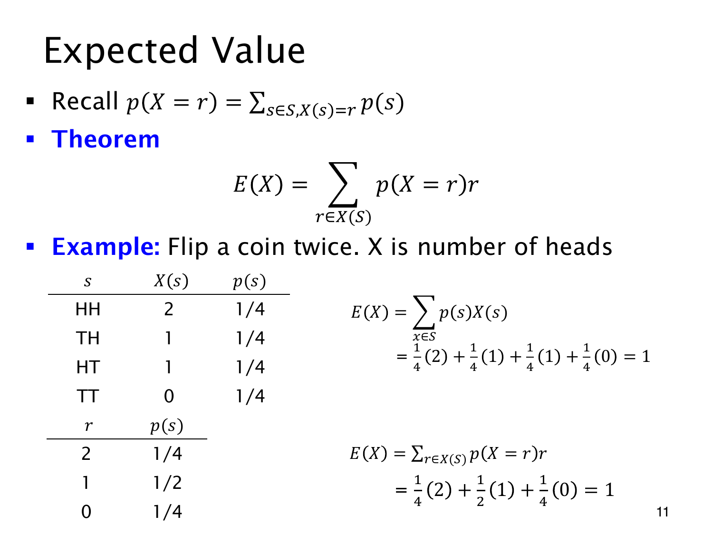

L1.11 · 第 11 页讲解原文
查看这一页课件

期望可以按取值分组
两次独立抛公平硬币，X 记正面次数。HH、TH、HT、TT 各有概率 1/4，对应数值为 2、1、1、0，直接按原始结果计算：
E(X)=41(2)+41(1)+41(1)+41(0)=1.
把同样得到 1 的 TH、HT 合并，其概率变成 1/2，也就能按随机变量的分布计算：
E(X)=241+121+041=1.
一般形式为
E(X)=r∈X(S)∑rp(X=r).
p(X=r) 已经加上全部满足 X(s)=r 的原始概率，所以这只是把 ∑sp(s)X(s) 重新分组，概率模型没有改变。
课件下方合并表的行表示取值，概率列虽然写 p(s)，这里应读作 p(X=r)。不能把三个值 0,1,2 各赋 1/3；取值 1 对应两个原始序列，合并时仍要保留它们的概率贡献。